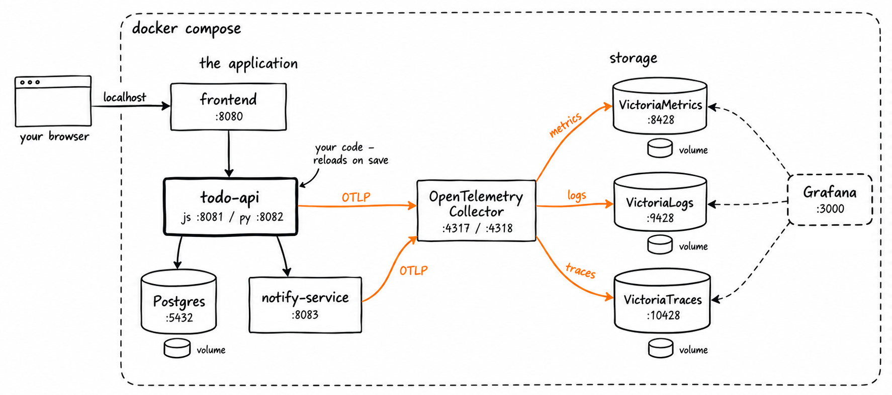

Module 2: Setup and Sanity Check
The goal of this module is boring on purpose: start everything with one command, and check that it’s all up and running before you start instrumenting. 🟢
What you need
- Docker with the Compose plugin:
docker compose versionmust answer gitand a Unix shell. On Windows, use WSL2.- About 4GB of free RAM and 4GB of free disk
- You do not need Node.js or Python installed — everything runs in containers
📦 Pre-work, if you have the chance. The stack is about 3 GB of images, and venue wifi is not your friend. Clone the repo (step 1 below) and pull them before you arrive:
cd observability-workshop/workshop
docker compose --profile js --profile py --profile go pull
Setup
-
Clone the repo and go into the workshop directory. Stay in
workshop/for the rest of the day — every command in every module assumes you are there.git clone https://github.com/jespino/observability-workshop cd observability-workshop/workshop -
Pick your track — the language you’re comfortable in, so the friction today is OpenTelemetry and not syntax:
Track Your API’s port Directory you’ll edit Node.js / Express 8081 track-js/todo-api/Python / Flask 8082 track-py/todo-api/Go / net/http 8085 track-go/todo-api/💡 Use the track switcher in the navigation bar at the top of this page. It flips every code example to your language and remembers the choice.
-
Start the stack for your track:
Node.js / Express
docker compose --profile js up -dPython / Flask
docker compose --profile py up -dGo / net/http
docker compose --profile go up -dThis starts one container per piece: your API, its Postgres database,
notify-service(the downstream service your API calls), the frontend, the OpenTelemetry Collector, VictoriaMetrics, VictoriaLogs and VictoriaTraces to store metrics, logs and traces, and Grafana to look at all three. Their data lives in Docker volumes, outside the repository: it survives restarts anddocker compose down, anddocker compose down -vdeletes it.
Your API’s source code is mounted into its container, so saving a file restarts it — that’s the whole deploy cycle for today.
-
Check that everything is up and running:
./doctor.shIt waits for the stack to come up — the first start takes a minute while your API installs its dependencies — and then checks every piece. Every row must be ✅. At the end it prints the UIs you’ll use all day: bookmark them.